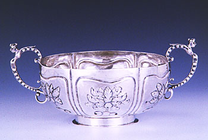

|
by Stefan Bielinski Jacob C. Ten Eyck was born in April 1705. He was the first of the ten children born to Albany silversmith Coenradt Ten Eyck and his wife, Gerritje Van Schaick Ten Eyck.  At age fifteen, he was sent to New York and apprenticed with Charles Le Roux - a notable silversmith and engraver. Perhaps he remained in New York beyond the apprenticeship - practicing his craft and beginning to work with gold. By 1736, he had returned to Albany where he married Albany native Catharina Cuyler. A decade older than most early Albany grooms, his family was comparatively small with only four children baptized between 1741 and 1749 in the Albany Dutch church where both parents were members. These Ten Eycks set up their home in the second ward where Jacob gained immediate acceptance. After serving as constable and firemaster, Jacob won election to the city council first as an assistant in 1734. In 1741, he was elected alderman for the first ward and held that position for a number of years. In 1747, he was appointed sheriff of Albany County. Then, he was named mayor of Albany in 1748. He served for two years. Following his term at city hall, he again was elected alderman in 1750 for the second ward and served through 1762. He relocated back to the first ward to a house on lower State Street. By that time, he was one of the wealthiest Albany businessmen with property assessments regularly near the top of the community's householders. He owned a number of lots within the city as well. In April 1788, his signature was at the top of a list of Albany antifederalists standing up in opposition to ratification of the Federal Constitution. Although well into his eighties, the home of Jacob C. Ten Eyck, where he lived with his wife and three servants, was an Albany landmark as late as 1790. Jacob C. Ten Eyck died on September 9, 1793. He had lived past his eighty-eighth birthday.
Silver bowl in the collection of the Albany Institute of History and Art. last revised 3/16/09 |